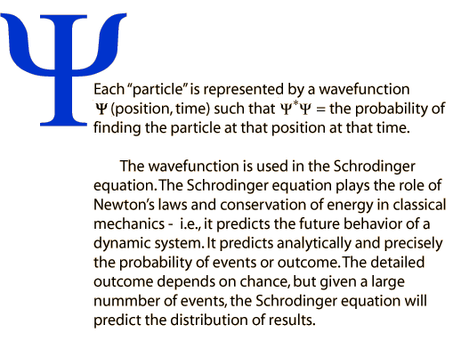
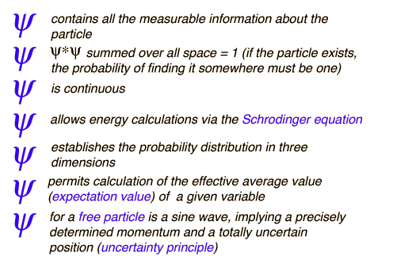

Properties of wavefunction
Index
Schrodinger equation concepts
HyperPhysics
*****
Quantum Physics
R Nave
Go Back
Wavefunction Properties

Role of wavefunction
Constraints on wavefunction
Index
Schrodinger equation concepts
HyperPhysics
*****
Quantum Physics
R Nave
Go Back